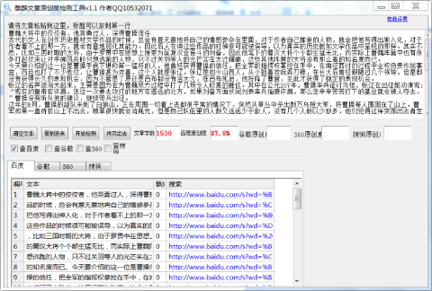

《三国演义》曹魏大将中的佼佼者，他英勇过人，深得曹操信任
古代的文人在创作历史题材文学作品的时候，总会有意无意地将自己的情感参杂在里面，对于作者自己推崇的人物，就会把他写得出神入化，对于作者看不上的那一方，就会有意地弱化其能力。因此后人在读这些作品的时候很可能被误导，以为真实的历史就如文学作品中呈现的那样。
其实不然，比如三国时期的大将，由于罗贯中在思想上推崇为匡复汉业奋斗的刘备，因此他笔下的蜀汉大将个个都生猛无比，而实际上曹魏阵营中也有很多打起仗来让对手闻风丧胆只想逃跑的人物，只不过关羽等人的光芒实在太过耀眼，这些其他阵营的大将没有那么高的知名度而已。
今天要介绍的这一位是曹操手底下堪称第一猛将的人，他曾经获得曹操的信任，把全军的指挥权掌控在手中，在南征西讨的过程中全权负责作战事宜，而且也打了不少胜仗，让曹操甚为欢喜，这个人就是张辽。
张辽是如今山西人，从小就喜欢玩弄刀棒，在长大后曾经跟随过几个领导，但是都没有获得长久的表现机会，因为不管是丁原还是吕布都没有活太久，在吕布死后，他投降了曹营，至此才获得了稳定的表现机会。
张辽的名声逐渐大起来，主要是因为在为曹魏效力过程中打了几场令人欣赏的胜仗。其中在公元207年，曹操率兵征讨乌桓，张辽在出征前劝谏说:“现在的皇帝在许昌，您这一次要去攻打的地方在遥远的北方，如果刘备方面伙同刘表率兵偷袭许昌，那么您辛辛苦苦打下的基业就会被人夺去。”曹操没有听从他的建议，继续带兵出征。
这年的8月，曹操的部队来到了白狼山，正在周围一切看上去都很平常的情况下，突然从草丛中杀出数万乌桓大军，将曹操等人围困在了山上。曹军如果一直待在山上不出去，粮草很快就会消耗光，但是自己队伍里的人数又远远少于敌人，没有几个人敢以少敌多，他们觉得这样突围出去肯定是送死。
面对这种情况，就连曹操都一下子没了主意，曹军的大将们也都十分惊恐，悲观情绪在军中蔓延。就在大家都垂头丧气，不知该如何应对的时候，张辽站出来劝说曹操立刻组织敢死队突围，因为在这样等下去纯粹是等死。在众位将军都丧失信心的时候，看到张辽如此信心满满，曹操十分信任地将大军的指挥权交给张辽。张辽一看敌人的阵型还没有摆好，猜想敌人一定还没有做好围歼的准备，此刻突围是最佳的选择。于是他将军队分为好几拨，安排好他们各自的任务，自己带一小队人马充当先锋杀了出去，然后过了一会儿他安排的后手上来支援，曹军就这样顺利突围，大破敌军。这次战斗让曹操见识到了他的厉害，从此张辽成了曹魏帐下人人都不可忽视的将军。
公元208年，当时好几股势力对于荆州的争夺十分激烈，张辽受曹操的部署，带领一支新成立的军队驻扎在长社。一般新成立的军队人心不稳，很可能会出一些乱子，但是这是一只张辽统领的部队，一般人不敢造次。在快要出征前的一天晚上，军营里突然起了火，将士们都纷纷从睡梦中醒来，不知道发生了什么事。此时军中的主将张辽下令全体将士不要乱动，还说肯定是有人造反，想趁着军中慌张之际作乱。
于是他传下令去，只要不是想要造反的人就原地坐下不要动，他亲自带领一些亲信在阵中守候，就这样没有过多长时间局面就得到了控制，造反的人也很快被抓住了然后被斩首，张辽下令昭告全营将士造反的后果。这一经历也说明张辽不仅打仗勇猛，治军还有一套。
关于张辽的故事还有很多，比如他打得江东士兵听到他的名字就害怕，连小孩晚上啼哭时，一听到他的名字都会立马停住。虽然这个说法有一定夸张成分，但是足以说明这个人的战斗力有多么出色。
小编看来，三国时期的猛将无数，但是像张辽这样既会打仗又会治军的大将，无疑是各个诸侯都想要得到的帮手。曹操之所以能够在后面的斗争中获得优势，也得益于他的手下有那么多张辽式的人物，正是他们舍命为曹操效力，才有了曹魏政权的经久不衰。
